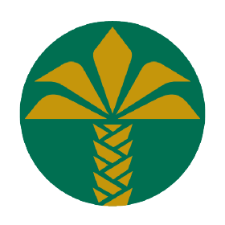

Duchenne Musküler Distrofi (DMD), çoğunlukla erkek çocuklarda görülen genetik, ilerleyici ve ölümcül bir kas hastalığıdır. Bu hastalıkta, kasların onarımı ve gücü için gerekli olan "distrofin" proteini ya hiç üretilemez ya da hatalı üretilir. Sonuç olarak kaslar zamanla zayıflar ve görevlerini yerine getiremez hâle gelir. Belirtiler genellikle 2-5 yaş arasında ortaya çıkar. Çocuklar yürümekte, koşmakta ve merdiven çıkmakta zorlanmaya başlar. İlerleyen yıllarda kas erimesi hızlanır, tekerlekli sandalyeye bağımlılık ve solunum ile kalp kaslarının etkilenmesi görülür. Genellikle genç yaşta hayati organların işlev kaybı nedeniyle kayıplar yaşanabilir.
Merhaba, ben Furkan.
3 aylıkken soğuk algınlığı şikayetiyle gittiğim hastanede yapılan kan tahlilinde ALT, AST ve CK değerlerimin yüksek olduğunu öğrendik.
6 aylıkken yapılan genetik kan testi sonucunda ilerleyici ve ölümcül bir kas hastalığı olan DMD (Duchenne Musküler Distrofi) teşhisi aldım.
Teşhis sonrasında yaşam kalitemi arttırmak için beslenme düzenime dikkat ettik, fizik tedavi ve yüzme ile tedavimi destekledik.
Çünkü kaslarıma ve eklemlerime iyi gelen tek şey bunlardı.
2023 yılının Haziran ayında DMD için geliştirilen Elevidys adlı Gen tedavisi FDA tarafından onaylandı.
Ancak bu tedavinin maliyeti oldukça yüksek. Bu yüzden sizlerin desteklerinize ve yardımınıza ihtiyacım var.
Sizlerin desteğiyle Gen tedavisine ulaşarak diğer çocuklar gibi yürümeye devam edebilirim.
Bu zorlu savaşımda beni yalnız bırakmayın. Sizlere ihtiyacım var.
Duchenne Musküler Distrofi (DMD) için son yıllarda büyük bir umut doğdu. 2023 yılında FDA tarafından onaylanan gen terapisi Elevidys, DMD tedavisinde devrim niteliğinde bir gelişme oldu. Bu tedavi, vücuda eksik olan "mikro-distrofin" genini taşıyan bir virüs aracılığıyla uygulanıyor. Böylece kas dokusu korunabiliyor ve çocuklar kaslarını kaybetmeyecek, diğer çocuklar gibi özgürce koşabilecek. Şu anda ABD'de uygulanmaya başlanan bu tedavi, hastalığın seyrini değiştirebilecek güçlü bir seçenek sunuyor. Ancak oldukça maliyetli olduğu için aileler bağış kampanyaları ile destek arıyor.
Bağış Yaparak Destek Olabilirsiniz
Her bağış, Furkan'ın tedavisine ulaşması için atılan önemli bir adım. Siz de bu umut yolculuğunda yerinizi alın. İşte bazı örnekler:
- 10.000 kişi, sadece 200 TL bağışlasa: → 2.000.000 TL toplanır → Hedefin yaklaşık %1,8'i tamamlanır
- 2.300 kişi, 500 TL bağışlasa: → 1.150.000 TL toplanır → Hedefin yaklaşık %1'i tamamlanır
- 5.650 kişi, 1.000 TL bağışlasa: → 5.650.000 TL toplanır → Hedefin yaklaşık %5'i tamamlanır
- 1.000 kişi, 5.000 TL bağışlasa: → 5.000.000 TL toplanır → Hedefin yaklaşık %4,4'ü tamamlanır
- 500 kişi, 10.000 TL bağışlasa: → 5.000.000 TL toplanır → Hedefin yaklaşık %4,4'ü tamamlanır
Takip Edip Farkındalık Oluşturarak Destek Olabilirsiniz
Bağış yapamıyorsanız bile, farkındalık oluşturarak Furkan'ın sesi olabilirsiniz. Her paylaşım, her konuşma, Furkan'ın tedaviye ulaşma umudunu artırıyor:
- Sosyal medya hesaplarımızı takip edin ve Furkan'ın hikayesini daha fazla kişiye ulaştırmamıza yardımcı olun:
- Gönderilerimizi paylaşın ve Furkan'ın hikayesini daha fazla kişiye ulaştırın. Her paylaşım, yeni bir umut kapısı açabilir.
- Çevrenizdeki insanlarla DMD hakkında konuşun. Furkan'ın hikayesini anlatın ve farkındalık yaratın. Birlikte daha güçlüyüz.
Bağış Yap
Hedefimiz: 2.899.907 USD
Her bağış bir umut, her umut bir hayat...
Toplanan Bağış
İhtiyaç Duyulan Bağış
Bu kampanya Tokat Valiliği tarafından onaylanmıştır.
E-Devlet Sorgu Sayfasına GitKredi Kartı ile Bağış
SMS ile Bağış
Telefonunuzdan SMS ile hızlıca bağış yapabilirsiniz:

Kuveyt Türk Bankası | Alıcı: Furkan ElmasTL IBAN
TR65 0020 5000 0913 3755 1000 01
SWIFT Kodu:
KTEFTRISXXX
USD IBAN
TR81 0020 5000 0913 3755 1001 01
EUR IBAN
TR54 0020 5000 0913 3755 1001 02
GBP IBAN
TR27 0020 5000 0913 3755 1001 03
CHF IBAN
TR97 0020 5000 0913 3755 1001 04
YURT DIŞI HESAP BİLGİLERİ
Alıcı: First Care e.V.
Açıklama: Furkan Elmas
IBAN: DE46 6039 1310 0385 8820 76
BIC: GENODES1VBH